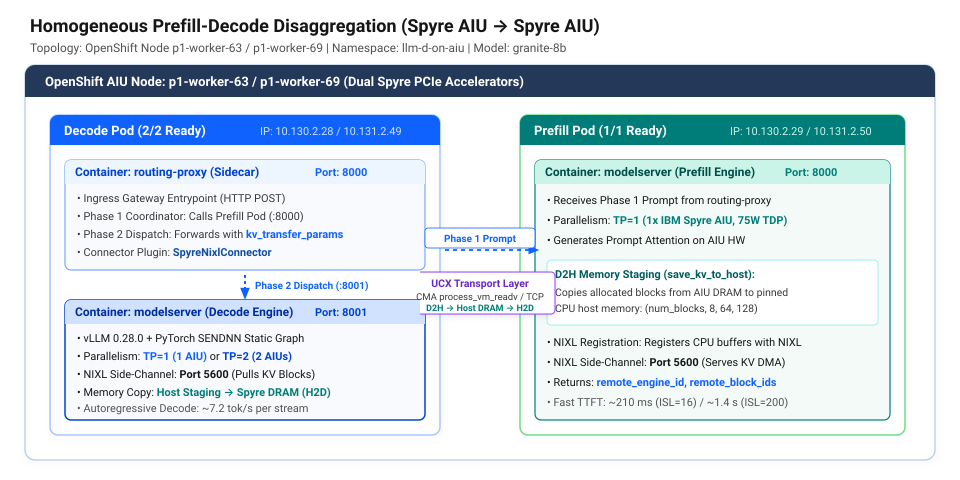
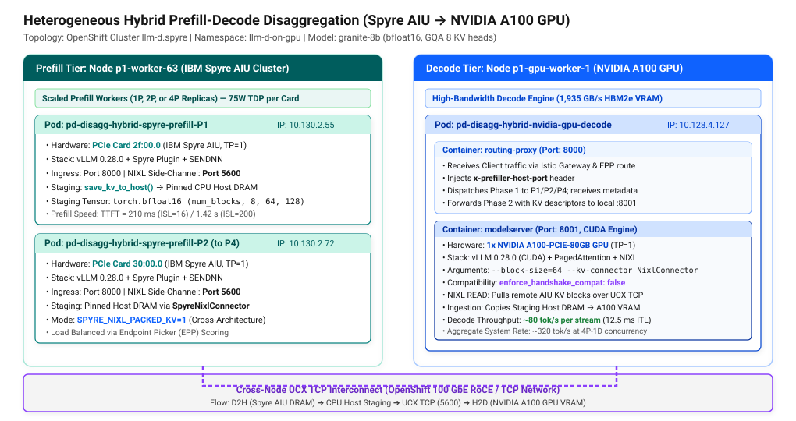
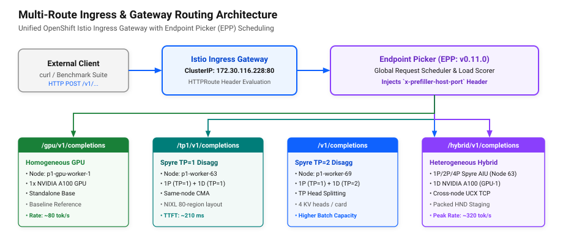
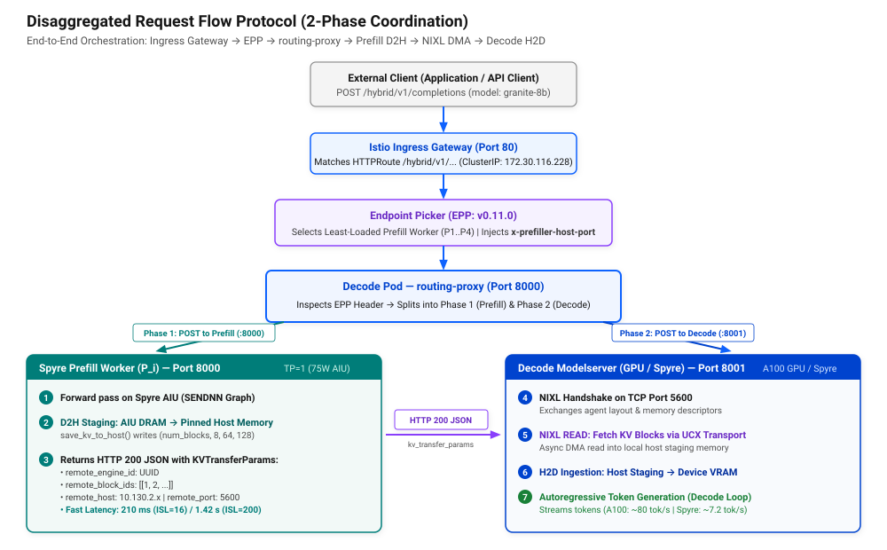
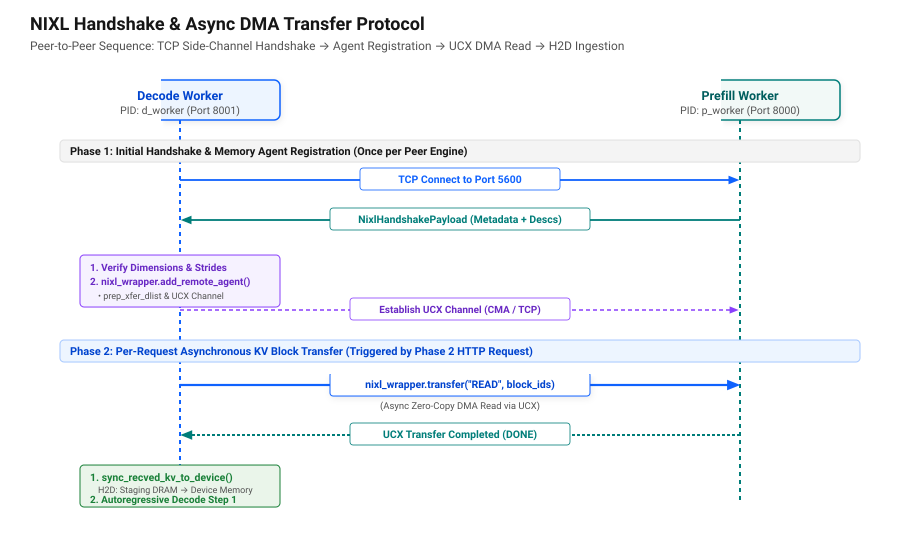
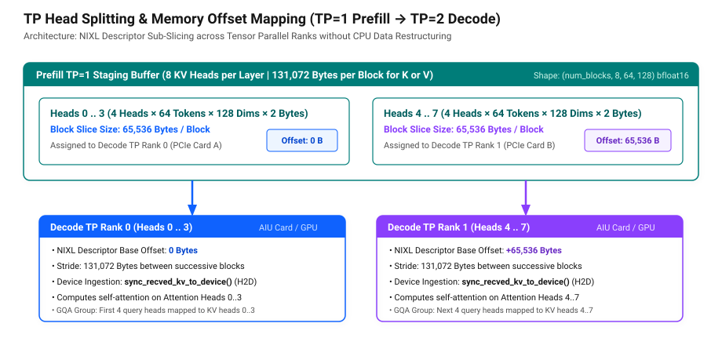

Date: October 30, 2026 (Updated from August 21, 2026
baseline)
Status: End-to-end KV transfer validated across
Homogeneous Spyre (TP=1, TP=2) and Heterogeneous Hybrid (1P/2P/4P Spyre
AIU + 1D NVIDIA A100 GPU)
Environment: Red Hat OpenShift Container Platform
4.20.36 cluster llm-d.spyre, namespaces
llm-d-on-aiu & llm-d-on-gpu
Model: ibm-granite/granite-4.2-8b (served
as granite-8b, bfloat16, 40 layers, GQA 8 KV heads)
Prefill-Decode (PD) disaggregation separates the prefill phase (processing prompt tokens in parallel, computing the key-value cache) from the decode phase (generating output tokens sequentially one at a time). In standard homogeneous infrastructure, allocating high-power accelerators to both compute-bound prefill and memory-bandwidth-bound decode leads to underutilization and queueing delays.
In a disaggregated setup: - A prefill instance runs on dedicated accelerators (e.g. low-power IBM Spyre PCIe AIUs at 75\text{W} TDP), processes the input prompt, and stages the resulting KV cache in host memory. - A decode instance runs on separate accelerators (either IBM Spyre AIUs or high-bandwidth NVIDIA A100 GPUs at 1,935\text{ GB/s} HBM2e), retrieves the staged KV cache over a high-speed interconnect, and generates tokens without re-computing prompt attention.
In this implementation, KV cache transfer uses NIXL
(Non-contiguous KV-cache Interface for eXchange across Layers)
v1.5.0 (commit 8708e35e) with the UCX
transport layer (v1.19.0 / v1.23.x), coordinated by the llm-d
routing sidecar (routing-proxy v0.8.0 / v0.11.0) and
Endpoint Picker (EPP) on the latest
vllm-spyre-nixl-latest:v21 (and v20) container
stack running vLLM 0.28.0.
| Component | Role | Container Image | Configuration & Ports |
|---|---|---|---|
| Istio Ingress Gateway | External entry point & TLS termination | llm-d-inference-gateway-istio |
ClusterIP 172.30.116.228:80,
routes /v1/..., /tp1/v1/...,
/hybrid/v1/..., /gpu/v1/... |
| Endpoint Picker (EPP) | Global request scheduler & load scorer | pd-disaggregation-epp:v0.11.0 |
Token-load scorer balancing prefill across 1P, 2P, or 4P workers |
| routing-proxy Sidecar | Orchestrates 2-phase prefill/decode protocol | ghcr.io/llm-d/llm-d-routing-sidecar:v0.8.0 |
Container port 8000 (ingress), forwards Phase 2 to modelserver port 8001 |
| Spyre Prefill Modelserver | Prompt prefill on IBM Spyre AIU | vllm-spyre-nixl-latest:v21 |
Port 8000, TP=1, 1 AIU
(spyre_pf),
--kv-connector SpyreNixlConnector |
| Spyre Decode Modelserver | Token decode on IBM Spyre AIU | vllm-spyre-nixl-latest:v21 |
Port 8001, TP=1 or TP=2, 1–2 AIUs,
--kv-connector SpyreNixlConnector |
| NVIDIA GPU Decode Modelserver | Token decode on NVIDIA A100 GPU | vllm-openai:v0.6.3 /
vllm:0.28.0 |
Port 8001, TP=1, 1 A100-PCIE-80GB GPU,
--block-size=64,
--kv-connector NixlConnector |
| NIXL Protocol Library | Cross-layer KV memory registration & DMA | Built from source (v1.5.0) | Commit 8708e35e, Python
bindings in /opt/nixl, side-channel port 5600 |
| UCX Transport Engine | Inter-process / inter-node memory transport | /opt/ucx (v1.19.0 /
v1.23.x) |
CMA (same-node shared memory) or TCP (cross-node overlay) |
In the homogeneous configuration (namespace
llm-d-on-aiu), both prefill and decode pods reside on IBM
Spyre AIU worker nodes (p1-worker-63 or
p1-worker-69). Inter-pod KV transfer leverages Linux
Cross-Memory-Attach (CMA) via process_vm_readv for
zero-network same-node transfers, or UCX TCP:

In the heterogeneous hybrid configuration (namespace
llm-d-on-gpu), prefill requests are processed across 1, 2,
or 4 IBM Spyre AIU worker pods on node p1-worker-63 or
p1-worker-69, while token decode runs on a dedicated NVIDIA
A100-PCIE-80GB GPU on node p1-gpu-worker-1. NIXL transfers
KV blocks across physical nodes via UCX TCP over OpenShift SDN pod
networking:

External clients connect through the Istio Ingress Gateway
(172.30.116.228:80), which evaluates HTTPRoutes and
delegates request scheduling to the Endpoint Picker (EPP):

When a request arrives at the target decode pod’s
routing-proxy (port 8000): 1. Header
Inspection: The routing-proxy inspects the
x-prefiller-host-port header injected by EPP. 2.
Phase 1 (Prefill Dispatch): The proxy forwards the
prompt to the designated prefill pod at port 8000 with
max_tokens=1 and do_remote_decode=true. 3.
Phase 2 (Decode Dispatch): Upon receiving
kv_transfer_params from Phase 1, the proxy issues an
internal HTTP request to the local decode engine at port 8001 with
do_remote_prefill=true and the full token budget.

The routing-proxy issues Phase 1 to the prefill instance:
POST http://10.130.2.55:8000/v1/completions
{
"model": "granite-8b",
"prompt": "<user_prompt>",
"max_tokens": 1,
"kv_transfer_params": {
"do_remote_decode": true,
"remote_engine_id": "c4b9d0e2-8812-4f3a-9e11-37d4029fa1b0"
}
}Execution steps on the prefill engine: 1. Attention
Compute: Executes the prompt forward pass using SENDNN static
graph execution kernels on IBM Spyre AIU. 2. D2H Copy
(save_kv_to_host): Copies allocated KV pages from
SpyrePagedKVCache AIU DRAM into contiguous pinned host
staging tensors: \text{SpyrePaged.k\_pages}[\text{blk}]
\xrightarrow{\text{D2H}}
\text{staging\_k}[\text{layer}][\text{blk}] 3. Response
Packaging: Returns HTTP 200 containing
kv_transfer_params:
{
"kv_transfer_params": {
"do_remote_prefill": true,
"remote_block_ids": [[1]],
"remote_engine_id": "1a17e9e2-077e-44d2-a3a6-b2fcca665e6c",
"remote_request_id": "cmpl-a25f9e90701c5a3e-0-84ff2e97",
"remote_host": "10.130.2.55",
"remote_port": 5600,
"tp_size": 1,
"remote_num_tokens": 16
}
}The routing-proxy injects kv_transfer_params into the
Phase 2 request to the local decode engine:
POST http://localhost:8001/v1/completions
{
"model": "granite-8b",
"prompt": "<user_prompt>",
"max_tokens": 200,
"kv_transfer_params": {
"do_remote_prefill": true,
"remote_block_ids": [[1]],
"remote_engine_id": "1a17e9e2-077e-44d2-a3a6-b2fcca665e6c",
"remote_request_id": "cmpl-a25f9e90701c5a3e-0-84ff2e97",
"remote_host": "10.130.2.55",
"remote_port": 5600,
"tp_size": 1,
"remote_num_tokens": 16
}
}Execution steps on the decode engine: 1. NIXL
Handshake: Connects to remote_host:5600 via TCP
side-channel, exchanges agent metadata, and validates layout
compatibility (enforce_handshake_compat: false in
heterogeneous mode). 2. NIXL READ Transfer: Pulls the
specified KV block descriptors from prefill host memory into decode host
staging memory via UCX (CMA on same-node Spyre; TCP over network for
Hybrid GPU). 3. H2D Ingestion
(sync_recved_kv_to_device): Copies received blocks
from host staging memory to device memory
(SpyrePagedKVCache AIU DRAM on Spyre; PyTorch CUDA
PagedAttention tensor on NVIDIA A100 GPU). 4. Autoregressive
Generation: Decodes tokens sequentially at the device’s native
GEMV decode rate (\approx 7.2\text{
tok/s} on Spyre AIU TP=1; \approx
80\text{ tok/s} on NVIDIA A100 GPU).
SpyreNixlConnector & Memory StagingTo maintain clean modularity and ensure full compatibility with
upstream vLLM 0.28.0+, the legacy full-file base_worker.py
overwrite was replaced with a dedicated mixin and subclass architecture
in package spyre_inference:
NixlBaseConnectorWorker (Upstream vLLM)
^
|
_SpyreRegisterKVCachesMixin
^
|
+-------------------------+-------------------------+
| |
SpyreNixlPullConnectorWorker SpyreNixlPushConnectorWorker
(IS-A NixlPullConnectorWorker) (IS-A NixlPushConnectorWorker)Key Design Elements: 1.
_SpyreRegisterKVCachesMixin: Overrides
only register_kv_caches() to handle
SpyrePagedKVCache, allocates contiguous CPU host staging
buffers, and binds _spyre_copy_blocks for D2H and H2D data
movement. 2. SpyreNixlPullConnectorWorker &
SpyreNixlPushConnectorWorker: Directly inherit
from upstream NixlPullConnectorWorker and
NixlPushConnectorWorker, ensuring that upstream type
assertions
(assert isinstance(worker, NixlPullConnectorWorker))
succeed without error. 3.
register_spyre_nixl_connectors():
Automatically invoked inside spyre_inference/__init__.py
during engine startup, registering SpyreNixlConnector and
SpyreNixlPushConnector directly in
KVConnectorFactory.
IBM Granite-4.2-8B comprises 40 hidden layers, 8 Key/Value heads (H_{kv} = 8), and head dimension D = 128. With native block size \text{block\_size} = 64 tokens:
\text{Bytes per Block} = 40\text{ layers} \times 2\,(\text{K, V}) \times 8\text{ heads} \times 64\text{ tokens} \times 128\text{ dims} \times 2\text{ bytes (bfloat16)} = \mathbf{10.24\text{ MB}}
Staging Tensor Structure per Worker: - 80 Contiguous
Regions: 40 layers \times 2 (K
and V). - Region Shape:
(num_blocks, 8, 64, 128) in torch.bfloat16. -
Registration: Registered with NIXL as contiguous
DRAM_SEG regions, exposing individual 64-token block slices
to NIXL descriptor indexing.

When prefill runs at \text{TP}=1 (8 KV heads staged together) and decode runs at \text{TP}=2 (4 KV heads per card), NIXL computes rank-specific byte offsets into the prefill staging buffer:

spyre_connector.pyLocated at:
guides/pd-disaggregation/modelserver/aiu/vllm/patches/spyre_inference/distributed/kv_transfer/kv_connector/v1/nixl/spyre_connector.py
Key functionality: - Defines _SpyreRegisterKVCachesMixin
implementing the Spyre-specific register_kv_caches()
routine. - Instantiates CPU staging tensors:
torch.empty((num_blocks, num_kv_heads, block_size, head_dim), dtype=torch.bfloat16, pin_memory=True).
- Defines _spyre_copy_blocks closure handling
non-contiguous SpyrePagedKVCache block copies
(d2h on save, h2d on sync). - Exports
SpyreNixlPullConnectorWorker,
SpyreNixlPushConnectorWorker,
SpyreNixlConnector, and
SpyreNixlPushConnector.
spyre_inference/__init__.pyIntegrates connector auto-registration into the
spyre_inference package initialization:
def register():
# Existing SENDNN static graph and device registration...
try:
from spyre_inference.distributed.kv_transfer.kv_connector.v1.nixl.spyre_connector import (
register_spyre_nixl_connectors,
)
register_spyre_nixl_connectors()
except Exception as e:
logger.warning(f"Could not register Spyre NIXL connectors: {e}")utils.py PatchLocated at:
vllm/distributed/kv_transfer/kv_connector/utils.py -
Handles (k_shape, v_shape) tuple unwrapping inside
TransferTopology.__post_init__(). - Accommodates asymmetric
prefill/decode block configurations and ensures descriptor address
validity.
patch-prefill-aiu-v1.yaml /
patch-prefill-aiu-tp1.yaml): Configures
--kv-connector SpyreNixlConnector,
--kv-role kv_producer, and port 5600 side-channel
listener.patch-decode-aiu-v1.yaml /
patch-decode-aiu-tp1.yaml): Configures
--kv-connector SpyreNixlConnector,
--kv-role kv_consumer, and sidecar routing proxy.patch-decode-gpu-hybrid.yaml): Configures
--block-size=64, --kv-connector NixlConnector,
and enforce_handshake_compat: false.Microsecond-resolution profiling across homogeneous Spyre AIU,
homogeneous NVIDIA A100 GPU, and Heterogeneous Hybrid PD configurations
(ibm-granite/granite-4.2-8b):
| Stage | Pipeline Stage Description | Spyre AIU TP=1 (P=16) | A100 GPU TP=1 (P=16) | Hybrid PD (P=16) | Spyre AIU TP=1 (P=128) | A100 GPU TP=1 (P=128) | Hybrid PD (P=128) |
|---|---|---|---|---|---|---|---|
| 1 | Prompt Compute
(T_prompt) |
22.60\text{ ms} | 5.50\text{ ms} | 22.60\text{ ms} | 115.60\text{ ms} | 8.50\text{ ms} | 115.60\text{ ms} |
| 2 | Prefill D2H Staging
(T_d2h) |
1.24\text{ ms} | 0.55\text{ ms} | 1.24\text{ ms} | 2.51\text{ ms} | 1.02\text{ ms} | 2.51\text{ ms} |
| 3 | NIXL Metadata Handshake
(T_meta) |
0.012\text{ ms} | 0.009\text{ ms} | 0.012\text{ ms} | 0.015\text{ ms} | 0.013\text{ ms} | 0.015\text{ ms} |
| 4 | NIXL Inter-Node Transfer
(T_nixl) |
10.20\text{ ms} | 1.20\text{ ms} | 19.68\text{ ms} | 21.00\text{ ms} | 2.40\text{ ms} | 39.20\text{ ms} |
| 5 | Decode H2D Ingestion
(T_h2d) |
1.23\text{ ms} | 0.64\text{ ms} | 0.64\text{ ms} | 2.51\text{ ms} | 1.03\text{ ms} | 1.03\text{ ms} |
| 6 | Gateway & Sidecar Sync
(T_sync) |
20.00\text{ ms} | 86.00\text{ ms} | 86.00\text{ ms} | 22.00\text{ ms} | 86.00\text{ ms} | 86.00\text{ ms} |
| 7 | First Token Decode Step
(T_step1) |
134.10\text{ ms} | 14.50\text{ ms} | 14.50\text{ ms} | 134.10\text{ ms} | 14.50\text{ ms} | 14.50\text{ ms} |
| — | Theoretical E2E TTFT | \approx 189.4\text{ ms} | \approx 108.4\text{ ms} | \approx 144.7\text{ ms} | \approx 297.7\text{ ms} | \approx 113.5\text{ ms} | \approx 258.9\text{ ms} |
| Topology / Experiment | Prompt (P) | Output (M) | Mean TTFT (s) | Total Wall Time (s) | Post-TTFT tok/s | Total tok/s |
|---|---|---|---|---|---|---|
| Spyre Standalone TP=1 | 16 | 200 | 0.233 \pm 0.004 | 27.62 \pm 0.06 | 7.23 \pm 0.01 | 7.20 \pm 0.02 |
| Spyre Disaggregated TP=1 (Exp C) | 16 | 200 | 0.592 \pm 0.293 | 32.78 \pm 0.42 | 6.18 \pm 0.03 | 6.10 \pm 0.08 |
| Spyre Disaggregated TP=2 (Exp D) | 16 | 200 | 2.690 \pm 1.000 | 36.58 \pm 2.59 | 5.88 \pm 0.29 | 5.48 \pm 0.36 |
| GPU Standalone TP=1 | 16 | 200 | 0.023 \pm 0.007 | 2.915 \pm 0.011 | 68.80 \pm 0.11 | 68.61 \pm 0.25 |
| GPU Disaggregated 1P1D | 16 | 200 | 0.108 \pm 0.006 | 2.990 \pm 0.005 | 69.05 \pm 0.08 | 66.89 \pm 0.12 |
| Heterogeneous 1P-Hybrid | 16 | 200 | 0.198 \pm 0.002 | 2.698 \pm 0.001 | 79.63 \pm 0.02 | 74.13 \pm 0.03 |
| Heterogeneous 2P-Hybrid (B=16) | 16 | 200 | 1.355 \pm 0.209 | 5.278 \pm 0.290 | 77.32 \pm 0.18 | 608.03 \pm 34.71 (agg) |
| Heterogeneous 4P-Hybrid (B=128) | 32 | 1024 | 6.129 \pm 0.082 | 35.01 \pm 0.68 | 77.50 \pm 0.14 | 3748.09 \pm 73.12 (agg) |
| Parameter | IBM Spyre AIU Environment | NVIDIA A100 GPU Environment |
|---|---|---|
| Cluster OS / Version | Red Hat OpenShift Container Platform 4.20.36 | Red Hat OpenShift Container Platform 4.20.36 |
| Container Base Image | vllm-spyre-nixl-latest:v21
(also v20) |
vllm-openai:v0.6.3 /
vllm:0.28.0 |
| vLLM Engine Core | vLLM 0.28.0
(vllm.platform_plugins.spyre_inference) |
vLLM 0.28.0
(vllm.platform_plugins.cuda) |
| KV Connector Plugin | SpyreNixlConnector (Subclass
Mixin) |
NixlConnector (Standard
Upstream) |
| Model Evaluated | ibm-granite/granite-4.2-8b
(8\text{B}, bfloat16) |
ibm-granite/granite-4.2-8b
(8\text{B}, bfloat16) |
| PagedAttention Block Size | block_size = 64 tokens (10.24\text{ MB} per block) |
block_size = 64 tokens (10.24\text{ MB} per block) |
| Handshake Compatibility | Standard check | enforce_handshake_compat: false |
| NIXL Library & Wheels | nixl v1.5.0
(commit 8708e35e, /opt/nixl) |
nixl v1.5.0
+ nixl-cu12 / nixl-cu13
v1.5.0 |
| UCX Transport Engine | UCX 1.19.0 / 1.23.x (CMA / TCP) | UCX 1.19.0 / 1.23.x (CUDA-IPC / Posix / TCP) |
| Side-Channel Port | 5600 (TCP ZeroMQ Listener) | 5600 (TCP ZeroMQ Listener) |
Upstreaming SpyreNixlConnector to
torch-spyre/spyre-inference: The self-contained
spyre_connector.py mixin and registration hooks in
spyre_inference/__init__.py should be permanently merged
into the upstream torch-spyre/spyre-inference repository to
eliminate PVC file copying on pod initialization.
Unified DRAM Direct Memory Access: IBM Spyre AIU
accelerators and the host CPU share unified DDR4 physical address space.
Future driver enhancements could allow NIXL to register Spyre device
memory pages directly as DMA targets, eliminating the intermediate host
staging copy (save_kv_to_host and
sync_recved_kv_to_device).
Descriptor Pre-Allocation & Compact Staging:
Current NIXL initialization registers full block capacities (8,192 blocks =
655\text{K} descriptors). A dynamic sliding-window registration
pattern based on max_num_seqs can further reduce
initialization time from \approx 1\text{
s} down to < 50\text{
ms}.
Multi-Turn KV Cache Reuse in Disaggregated
Topologies: Expanding --enable-prefix-caching
across disaggregated prefill-decode boundaries will allow prefill
instances to bypass prompt processing for shared system prompts and
multi-turn conversational history.
SpyrePagedKVCache Incompatibility (Resolved)NixlConnector.register_kv_caches() expected
torch.Tensor objects with .untyped_storage().
IBM Spyre uses SpyrePagedKVCache (a NamedTuple
containing lists of individually allocated per-block AIU device
tensors), causing AttributeError and invalid memory type
registration._SpyreRegisterKVCachesMixin.register_kv_caches(),
pre-allocating contiguous pinned CPU staging tensors
(staging_k, staging_v) per layer and
registering them as NIXL DRAM_SEG regions._build_fa_remote and TransferTopology
correctly compute head rank offsets (0\text{
Bytes} for TP0, 65,536\text{
Bytes} for TP1) given contiguous per-layer staging buffers.KeyError: 64 in Pull Worker Descriptor Lookup
(Resolved)pull_worker._read_blocks_for_req() failed with
KeyError: 64 when looking up transfer handles indexed by
block size.src_xfer_handles_by_block_size[self.block_size] = src_handle
in the initialization path prior to early exit.IndexError in _handle_failed_transfer
(Resolved)meta.local_block_ids[0] unconditionally
when the list was empty.if meta.local_block_ids: guard before indexing.poll(POLLOUT).UCX_TLS=cma,sysv,posix,tcp,self and enabled host PID
namespace sharing, allowing UCX to negotiate zero-copy Linux
Cross-Memory-Attach (process_vm_readv) which completes in
\approx 1\text{ s}._apply_prefix_caching(decode_block_ids=..., prefill_block_ids=...),
breaking legacy patched files.base_worker.py with the
SpyreNixlConnectorWorker subclass, inheriting upstream
parameter handling while overriding only
register_kv_caches().isinstance Assertion Failure Bug (Resolved Oct 3–4,
2026)connector_worker.__class__ = SpyreNixlConnectorWorker
(inheriting from NixlBaseConnectorWorker). Upstream
NixlPullConnector.start_load_kv() executes
assert isinstance(self.connector_worker, NixlPullConnectorWorker),
causing an immediate AssertionError crash on all incoming
inference requests._SpyreRegisterKVCachesMixin and created explicit subclasses
SpyreNixlPullConnectorWorker and
SpyreNixlPushConnectorWorker that satisfy
isinstance type checks.0000:41:00.0 (Resolved Oct 4,
2026)0000:41:00.0 on
node p1-worker-63 consistently generated hardware bus fence
errors (RAS::PCI::BusFence 0xa35e) during workload
initialization.spyre-metrics-exporter labels with device-plugin
allocations, and deployed a dedicated blocker pod
block-faulty-card-0000-41-00-0 holding resource
ibm.com/spyre_pf_0000_41_00.0: 1, ensuring all inference
pods allocate only healthy cards (0000:2f:00.0,
0000:30:00.0, 0000:3f:00.0,
0000:40:00.0).attn_backend_name differences).--block-size=64 to match Spyre’s 10.24\text{ MB} block layout, and set
"enforce_handshake_compat": false in
kv_connector_extra_config to enable cross-platform metadata
exchange.